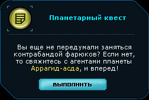
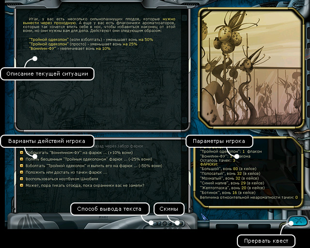

Руководство рейнджера
> Экран квеста
|
Руководство рейнджера
> Экран квеста
|
| Экран квеста  Правительство планеты может дать игроку задание на выполнение планетарного квеста. По прибытии на планету назначения, вы увидите в правом нижнем углу окно-приглашение с кратким описанием задания. После нажатия кнопки "Выполнить", вы попадете в режим квеста. |
В этом режиме экран состоит из 4 областей: описание текущей ситуации, варианты действий игрока, параметры игрока и сопутствующая картинка. |

| Для удобства игрока внизу в центре располагается настроечная панель для экрана квестов. Там вы можете выбрать цветовую гамму (4 кнопки "Скины") и включить или выключить анимацию появления текста в локациях. Выбирая те или иные действия, игрок переходит из ситуации в ситуацию, до тех пор, пока не выполнит поставленную перед ним в квесте задачу или не проиграет. На протяжении игры значения квестовых параметров изменяются. Когда некоторые параметры (например, здоровье игрока или время, данное на обезвреживание бомбы) достигают критических значений, квест завершается. При этом возможен как успех, так и провал полученного вами задания. Выполняя квест, ваш персонаж даже может погибнуть, поэтому не торопитесь принимать поспешные решения. Игрок может завершить квест тремя способами: • успешно пройдя квест (выполнив полученное задание) • провалив квест (погибнув или не выполнив задание) • досрочно прервав квест. Чтобы досрочно прервать квест: Нажмите кнопку "Прервать квест". Вы сможете вернуться к экрану главного меню. Чтобы начать квест заново: Нажмите клавишу R. Вы сможете вернуться к экрану планеты. |